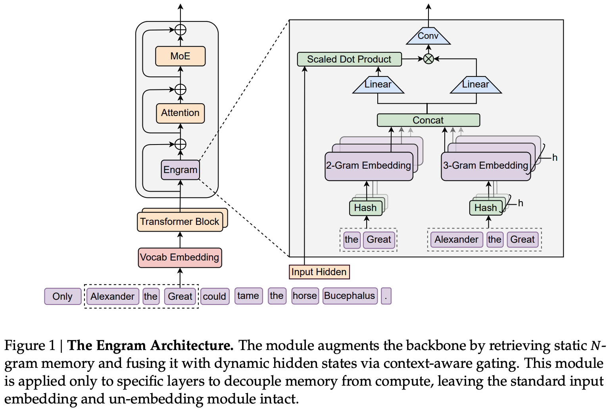
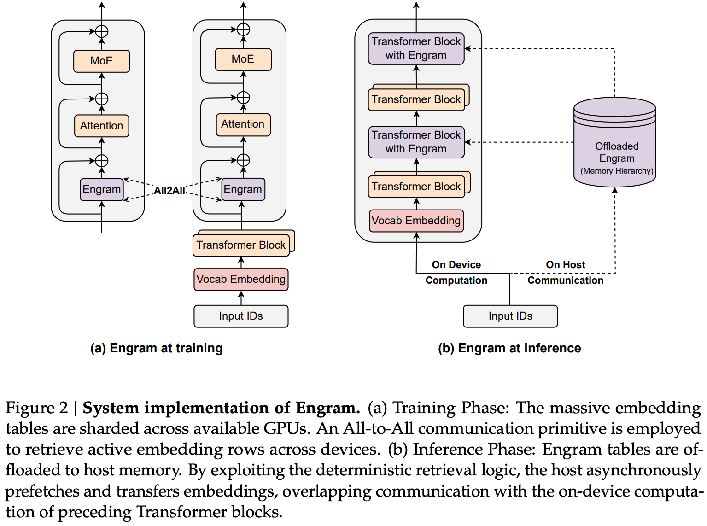
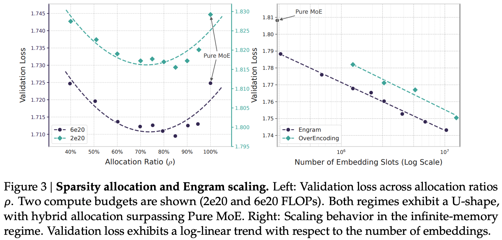
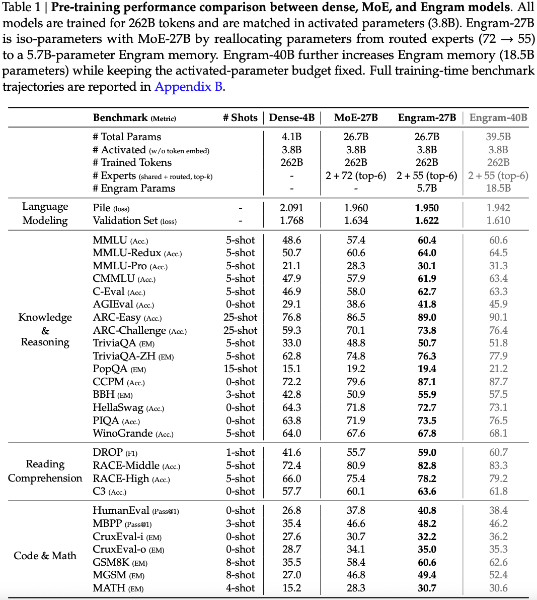
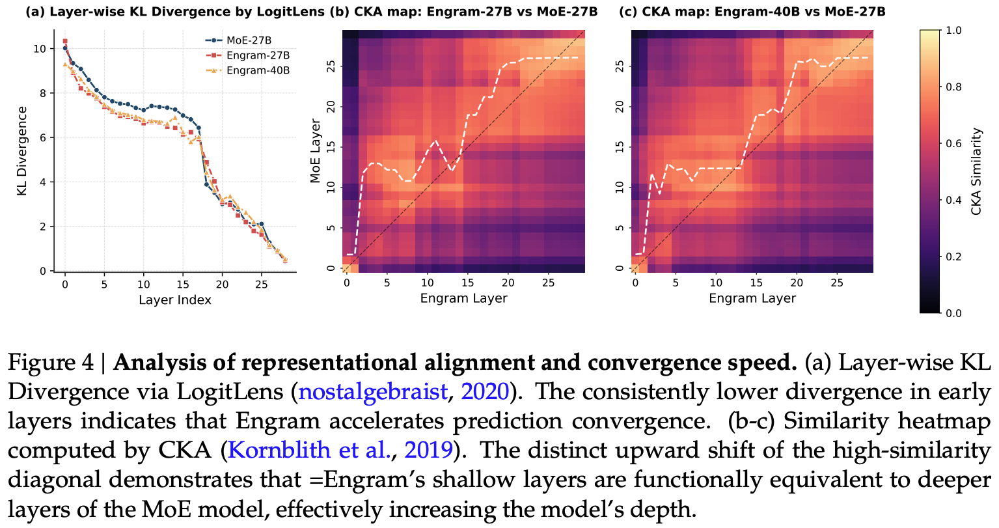
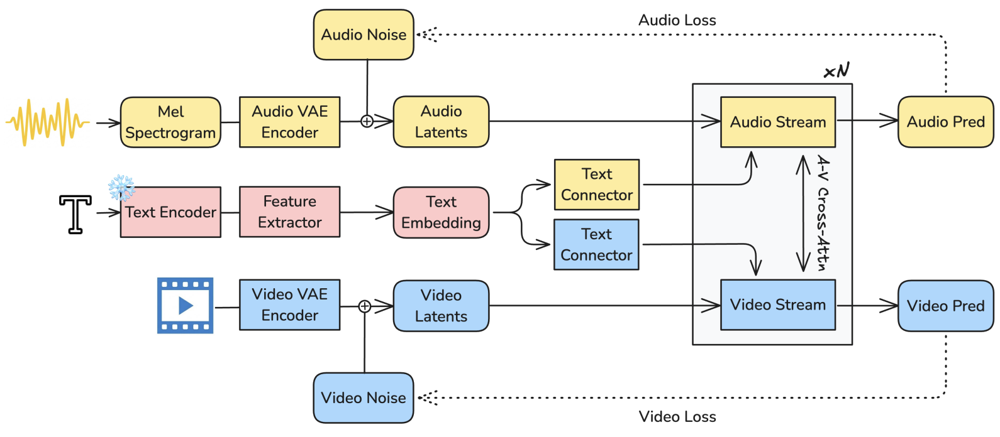
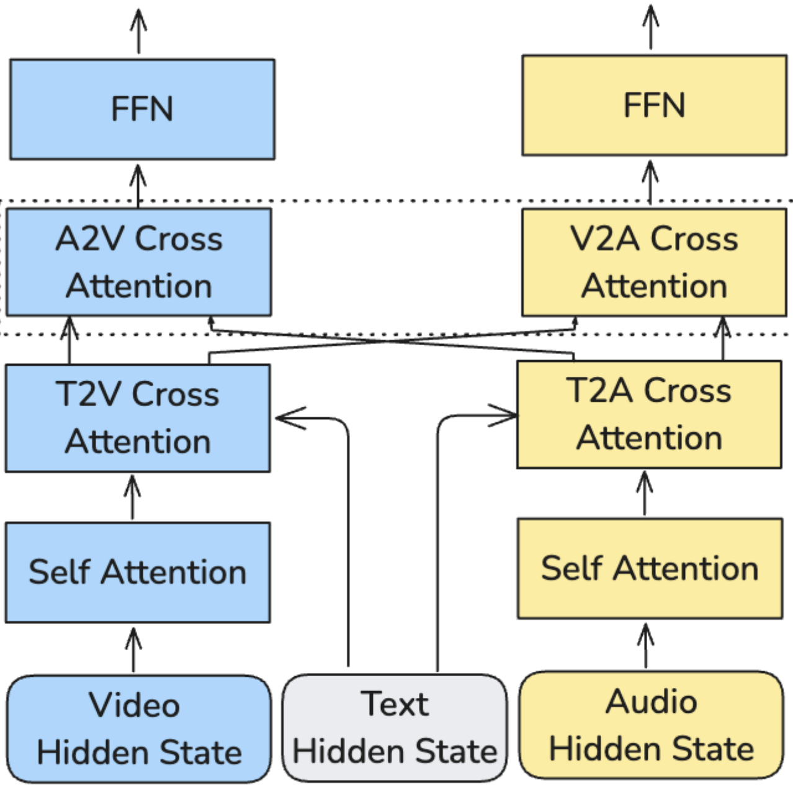
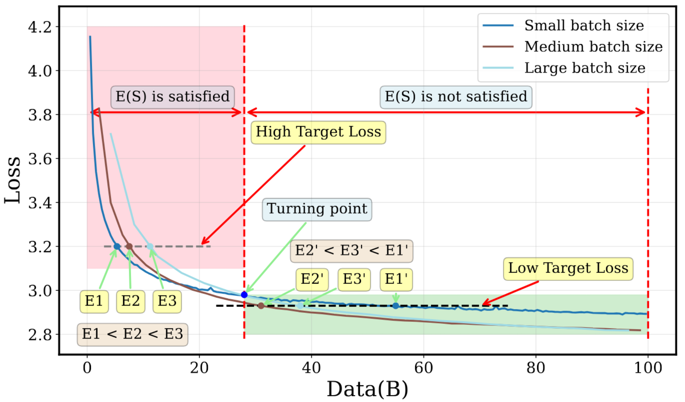
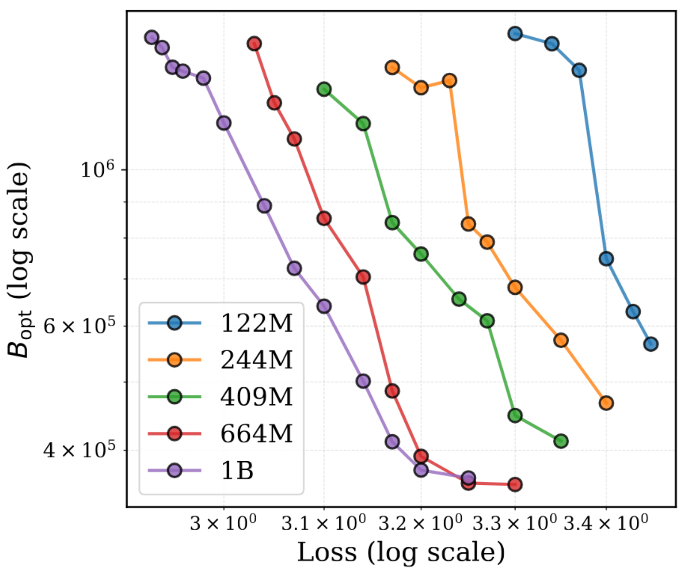
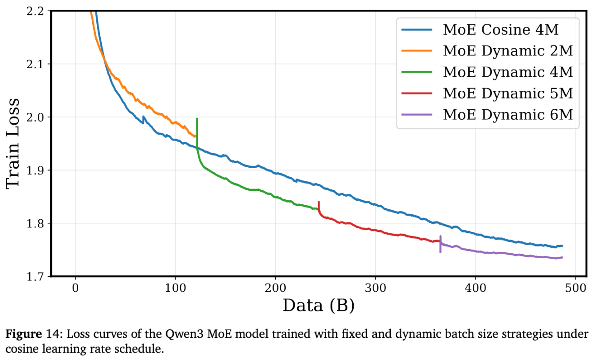

January Papers: Conditional Memories for LMs, Audio-Visual FMs, and Batch Size Schedulers
Welcome to the first edition of our Paper of the Month newsletter for 2026!
This month, our team went through 21 different papers to find the most insightful new pieces of literature that we think have the potential to leave a mark. From this selection, three papers stood out in particular:
-
Conditional Memory via Scalable Lookup: A New Axis of Sparsity for Large Language Models. Cheng et al. introduce a simple, scalable memory-augmentation for large language models to offload the cost of simple knowledge-based retrieval to embedding lookups.
-
LTX-2: Efficient Joint Audio-Visual Foundation Model. HaCohen et al. propose a joint text-conditioned audio-visual generation framework built using modality-specific VAEs, a refined text-conditioning module, and an asymmetric dual-stream diffusion transformer.
-
How to Set the Batch Size for Large-Scale Pre-training? Zhou et al. discuss how to identify the optimal batch size for large-scale pretraining, and find that dyamically increasing the batch size through time can improve performance.
We hope you enjoy this month's papers as much as we did! If you have thoughts or questions, please reach out to us at @GCResearchTeam.
Conditional Memory via Scalable Lookup: A New Axis of Sparsity for Large Language Models
The key idea
Offloading local dependencies between tokens with lookups to a massive embedding table improves large language model capabilities by freeing up attention capacity to model global context.
Their method
The authors propose that transformers need a cheap lookup mechanism to retrieve simple local dependencies between tokens, otherwise these dependencies will need to be learned and retrieved by expensive computation over model depth. As a result they design "Engram": a new module built around a lookup primitive with the following components:
- Canonicalisation of input tokens ("canonical tokens"), reducing redundancy by mapping tokens to a smaller set of semantically unique tokens by e.g., merging separate tokens for upper- and lower-case words (Tokenizer Compression).
- Constructing n-gram embeddings by hashing sequences of canonical tokens (Multi-Head Hashing).
- Using projections of the embeddings as keys and values for a sigmoidal attention-like gating mechanism taking model hidden state as query (Context-aware Gating), along with a dilated depthwise convolution to learn dependencies over local n-grams.

- During training: embedding table is sharded across GPU memory, with embeddings retrieved using an all-to-all
- During inference: embedding table is stored in Host DRAM and embedding lookups are offloaded to host CPU and transported over PCie.
- The latency of Host-GPU connections at inference time informs the placement of engram at at the start of the second layer, to allow overlapping of retrieval with computation of the first layer.
- Design allows for a naive implementation to incurs just 3% overhead, with plenty of room for improvement by exploiting memory hierarchy since engrams are accessed non-uniformly.

Results
Since lookups add no FLOPs, more parameters can be added via embedding tables without incurring computational costs. However, mixture-of-experts models also add parameters without additional computational cost through sparse compute. As such, the authors aim to determine how best to allocate "inactive parameters" across experts and engram tables. Across two compute budgets, they demonstrate an optimal allocation of 25% of inactive parameters to engram tables. Nevertheless in an unconstrained memory setting, larger tables improve results further.

These results bear out at large scale too. Compared with a 27B parameter MoE model trained for 262B tokens, they demonstrate that Engram augmented models provide improvements on retrieval and comprehension tasks and on several reasoning tasks.

The authors also include an interesting analysis of the representational similarity between Engram and MoE models, finding that earlier layers of Engram augmented models have representations similar to later layers of MoE models, backing up their claim that Engram frees up capacity for modelling complex long-range dependencies in global context.

Takeaways
Engram is a well-validated, simple, scalable extension of transformers that considers the systems impact of needing to store and retrieve from a massive embedding table in a non-blocking manner during inference. Without having validated the idea myself (yet!), I'm reasonably convinced this is a good addition to the transformer architecture, albeit it is somewhat worrying that manifold-constrained hyper-connections appear necessary for good performance. General adoption of the idea would appear to depend on whether Engram can work without Deepseek architectural variants and whether the 25% parameter allocation continues as models move towards a predicted shift of finer-grained mixture-of-experts models. The design space of memory augmented models is likely to evolve further and indeed concurrent work proposes an alternative method of including large embedding tables to replace FFN up-projections to improve knowledge storage. Additionally, systems with tighter CPU-GPU coupling will open up the feasibility of lower latency, more computationally intense lookup functions as scalable primitives.
LTX-2: Efficient Joint Audio-Visual Foundation Model
The key idea
LTX-2 is a text-conditioned generative model for joint audio-visual generation. Unlike prior approaches that generate video and audio separately or in sequential pipelines, LTX-2 directly models their joint distribution, enabling temporally aligned and semantically coherent audiovisual outputs.
LTX-2 is composed of modality-specific Variational Autoencoders (VAEs) that encode audio and video into separate latent tracks, a novel text-conditioning module for improved semantic understanding, and an asymmetric dual-stream Diffusion Transformer (DiT) backbone.

Method
Architecture
Video inputs are encoded using a spatiotemporal causal VAE, while audio inputs are encoded by a separate causal audio VAE operating on 16 kHz mel spectrograms. Text conditioning relies on a modified Gemma3-12B backbone, followed by a multi-layer feature extractor and a text connector module that refines the extracted representations using thinking tokens. The DiT backbone consists of a 14B-parameter video stream and a 5B-parameter audio stream. Each stream sequentially applies self-attention, text cross-attention for prompt conditioning, audio-visual cross-attention for inter-modal exchange, and a feed-forward network (FFN) for refinement.

Inference
At inference time, LTX-2 uses multimodal classifier-free guidance, where each modality is simultaneously guided by a text-based term and a cross-modality alignment term. A multi-scale, multi-tile inference strategy enables high-resolution audiovisual generation while avoiding the high memory costs typical of large-scale video diffusion models.
Results
Data
The model is trained on a collection of publicly available datasets, filtered to retain video clips with significant and informative audio content. The captioning of the video is done with a proprietary new video captioning system.
Results
The authors evaluate LTX-2 across three dimensions: audio-visual quality, video generation performance, and inference efficiency. They claimed that LTX-2 significantly outperforms open-source alternatives on audio-visual performances based on an internal benchmark as well as being ranked in the top five in image-to-video and text-to-video according to the Artificial Analysis public rankings. Finally, they compare runtime performance against Wan 2.2-14B, reporting up to an 18× speed improvement.
Limits
In addition to the limitations acknowledged by the authors, including poor mutli-speaker audio performances, limited temporal scalability for sequences longer than 20 seconds, and a lack of reasoning capabilities, the proprietary nature of the training data and the limited evaluation undermine any reproducility attents.
How to Set the Batch Size for Large-Scale Pre-training?
The batch size is an important hyperparameter in large-scale pretraining. Larger batch sizes provide less noisy gradients at each step and allow for better parallelisation. However, training on the same data multiple times gives diminishing returns, and large batch sizes consume more data per optimisation step.
The resulting tradeoffs can be expressed in terms of a relationship between the amount of data consumed and the number of optimisation steps. McCandlish et al. (2018) identified a relationship between the data consumption \(E\) (for “efficiency”, confusingly) and the number of optimisation steps \(S\) given by
\[\left(\frac{S}{S_{min}} - 1\right)\left(\frac{E}{E_{min}} - 1\right) = 1\]
where \(S_{min}\) and \(E_{min}\) are the minimum values of \(S\) and \(E\) respectively that are required to achieve a certain target loss. If \(B\) is the (constant) batch size, then using the relation \(E = BS\) this can be rearranged to give
\[E = E_{min} + BS_{min}\]
Since \(S_{min}\) and \(E_{min}\) are constants, this would imply that using a larger batch size always requires the use of more data. However, the authors find that this contradicts empirical results - while this is true for the early stages of training, it is not true for later stages. They show this in Figure 1 of the paper, which compares loss curves for training runs with different batch sizes (note that the x-axis is number of tokens here, not number of training steps).

To create a theory that matches these results, they conduct a theoretical analysis and find that for large \(S\), the amount of data required to reach a certain target loss is actually affine in \(S\), i.e. \(E = A_1 S + A_0\) for some constants \(A_0, A_1\). Taken together with the previous result that \(E\) gets very large as \(S\) gets increasingly closer to \(S_{min}\), this suggests is that the function \(E(S)\) is convex in \(S\). The authors thus assume that the function is roughly quadratic around the optimum, giving the following piecewise expression for \(E(S)\):
\[ E(S) = \begin{cases} B_{-1} / (S - S_{min}) + B_0 & \text{if } S_{min} \le S < S_1 \cr C(S - S_{opt})^2 + E_{min} & \text{if } S_1 \le S < S_2 \cr A_1 S + A_0 & \text{if } S > S_2 \end{cases} \]
This gives ten parameters to fit, with the dimensionality of the search space reduced by requiring \(E(S)\) to be continuous and have a contiunuous first derivative. A great number of data points can be generated by assuming that the loss follows a given scaling law with respect to the number of training steps.
The payoff is that, for a given target loss, we can compute the optimal batch size as
\[B_{opt} = \frac{E_{min}}{S_{opt}}\]
The authors use their model to compute the optimal batch size for a range of model sizes and loss values, and find that the optimal batch size tends to be larger for smaller target losses. This suggests that increasing the batch size over the course of training may be beneficial.

To investigate this, they compare training a Qwen3 MoE model with a constant batch size of 4M to training with batch sizes of [2M, 4M, 5M, 6M], increasing the batch size at regular intervals. The increasing batch size schedule performs better with a cosine learning rate schedule, and performs better during the “stable” phase of the WSD schedule until most of its advantage is eliminated during the critically important decay phase.

Overall, this paper provides a useful framework for thinking about how the batch size affects pretraining performance. One important limitation of this work is that determining the correct parameters for a given target loss requires conducting several training runs to that loss value with varying batch size, which would likely consume much more time and compute than the planned pretraining run. We hope that future work will provide reliable scaling laws that allow practitioners to extrapolate the optimal batch size for a larger run from data from smaller runs.